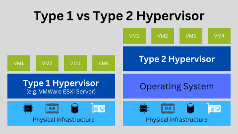

VMware_ESXi安装配置教程
公司购买了一台配置十分高级的联想工作站，为了充分利用该工作站，将安装 VMware_ESXi 对该工作站进行管理运维。
VMware_ESXi简介
VMware ESXi 是 VMware vSphere 虚拟化平台中的裸机虚拟机管理程序。作为用于创建和运行虚拟机 （VM） 的裸机虚拟机管理程序，VMware ESXi 在顶部运行并直接访问硬件，而无需安装操作系统。这种对硬件的直接访问使其比其他类型的虚拟机管理程序性能更好、运行速度更快、可扩展性更强。
VMWare ESXi 是 VMware 的裸机或 Type-1 虚拟机管理程序的名称。虚拟机监控程序是一种特殊的操作系统，您可以在其中创建、运行和管理多个虚拟机。每个 VM 都可以有自己的来宾操作系统和一个或多个应用程序。来宾操作系统可以是任何通用操作系统，如 Windows、macOS、Linux 等。
因此，单个 VMWare ESXi Server 可以同时支持多个 Windows 虚拟机或多个 Windows、macOS 和 Linux 虚拟机的组合。这称为服务器整合，这种做法允许您节省硬件、冷却和电源成本，并最大限度地利用物理资源。
作为 Type-1 虚拟机管理程序，VMWare ESXi Server 直接在物理基础架构上运行。因此，术语“裸机”。此特性与 Type-2 虚拟机监控程序不同，后者必须安装在操作系统之上。下图说明了两者之间的区别。

由于 VMware ESXi 不在操作系统上运行，因此它可以直接访问 CPU、RAM、存储和网络等底层资源。因此，VMware ESXi 的性能比任何 Type 2 虚拟机管理程序都要好得多。因此，这些虚拟机上的虚拟机和应用程序的运行速度比在 Type 2 虚拟机监控程序上的运行速度要快得多。
VMWare ESXi安装配置
请参考：
VMWare ESXi安装问题
VMWare ESXi不识别网卡
请参考：